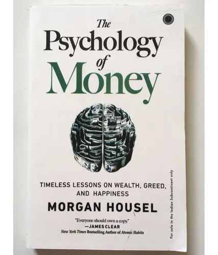

Professional Reviews It’s one of the best and most original finance books in years. Jason Zweig Morgan Housel’s new book clarifies – with razor sharp and accessible insight - that building wealth is a mindset problem, not an investment problem. This is the first book any investor should read; in conjunction with a good index fund, becoming wealthy lies within everyone’s grasp. Tim Hale, Managing Director at Albion Strategic Consulting and author of Smarter Investing: Simpler Decisions for Better Results Morgan Housel is that rare writer who can translate complex concepts into gripping, easy-to-digest narrative. The Psychology of Money is a fast-paced, engaging read that will leave you with both the knowledge to understand why we make bad financial decisions and the tools to make better ones. Annie Duke, Author, Thinking in Bets Few people write about finance with the graceful clarity of Morgan Housel. The Psychology of Money is an essential read for anyone who wants to make wiser decisions or live a richer life. Daniel H. Pink, #1 New York Times Bestselling Author of WHEN, TO SELL IS HUMAN, and DRIVE The Psychology of Money is bursting with interesting ideas and practical takeaways. Quite simply, it is essential reading for anyone interested in being better with money. Everyone should own a copy. James Clear, Author, million-copy bestseller Atomic Habits Morgan Housel is one of the brightest new lights among financial writers. He is accessible to everyone wanting to learn more about the psychology of money. I highly recommend this book. James P. O’Shaughnessy, Author, What Works on Wall Street Housel's observations often hit the daily double: they say things that haven't been said before, and they make sense. Howard Marks, Director and Co-Chairman, Oaktree Capital & Author, The Most Important Thing and Mastering the Market Cycle
